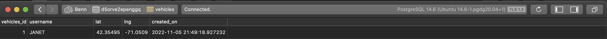

Introduction
I was hired to provide a security assessment of a back-end written in Node.js. The task is to uncover and report on any
security or privacy vulnerabilities that I discover as a result of auditing the source code. The client believes there are at least
three potential vectors of attack, although more may be present.
OWASP Top Ten vulnerabilities are highest priority, particularly SQL injection vectors.
Methodology
Prior to investigating code, I used black-box testing to search for likely vulnerabilities.
Subsequent to black-box testing, the primary mode of insepction is an in-depth, line-by-line code audit,
backed up by sending curl requests to verify findings. The code was deployed to a Heroku cloud server for testing.
Abstract of Findings
Issues Found
-
- Issue: SQL Injection vulnerability
- Location: line 90
- Severity: Critical
-
Description: A SQL injection vulnerability exists in the GET vehicle.json endpoint which would allow
hackers to run their own SQL queries against the database. They could potentially use this to erase or
alter records.
- Proof:
- Resolution: Change this query to use a 'prepare'-style, similar to lines 29 & 56.
-
- Issue: GPS coords of users are saved to database
- Location: line 29
- Severity: Medium
- Description: This is a privacy issue - user details are sent to the database and saved there, with no encryption.
- Proof: 
-
Resolution: Encrypt user details like lat/lng coordinates. Institute a policy of deleting this sensitive
data periodically.
-
- Issue:
- Location:
- Severity:
- Description:
- Proof:
- Resolution:
Conclusion